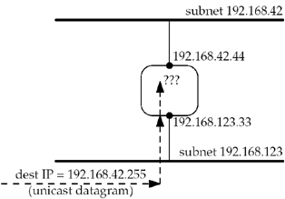

20.2 Broadcast Addresses
If we denote an IPv4 address as {subnetid, hostid}, where subnetid represents the bits that are covered by the network mask (or the CIDR prefix) and hostid represents the bits that are not, then we have two types of broadcast addresses. We denote a field containing all one bits as –1.
Subnet-directed broadcast address: {subnetid, –1}—This addresses all the interfaces on the specified subnet. For example, if we have the subnet 192.168.42/24, then 192.168.42.255 would be the subnet-directed broadcast address for all interfaces on the 192.168.42/24 subnet. Normally, routers do not forward these broadcasts (pp. 226–227 of TCPv2). In Figure 20.2, we show a router connected to the two subnets 192.168.42/24 and 192.168.123/24.

The router receives a unicast IP datagram on the 192.168.123/24 subnet with a destination address of 192.168.42.255 (the subnet-directed broadcast address of another interface). The router normally does not forward the datagram on to the 192.168.42/24 subnet. Some systems have a configuration option that allows subnet-directed broadcasts to be forwarded (Appendix E of TCPv1). Forwarding subnet-directed broadcasts enables a class of denial-of-service attacks called "amplification" attacks; for instance, sending an ICMP echo request to a subnet-directed broadcast address can cause multiple replies to be sent for a single request. Combined with a forged IP source address, this results in a bandwidth utilization attack against the victim system, so it's advisable to leave this configuration option off. For this reason, it's inadvisable to design an application that relies on forwarding of subnet-directed broadcasts except in a controlled environment, where you know it's safe to turn them on.
Limited broadcast address: {–1, –1, –1} or 255.255.255.255—Datagrams destined to this address must never be forwarded by a router. 255.255.255.255 is to be used as the destination address during the bootstrap process by applications such as BOOTP and DHCP, which do not yet know the node's IP address. The question is: What does a host do when an application sends a UDP datagram to 255.255.255.255? Most hosts allow this (assuming the process has set the SO_BROADCAST socket option) and convert the destination address to the subnet-directed broadcast address of the outgoing interface. It is often necessary to access the datalink directly (Chapter 29) to send a packet to 255.255.255.255. Another question is: What does a multihomed host do when the application sends a UDP datagram to 255.255.255.255? Some systems send a single broadcast on the primary interface (the first interface that was configured) with the destination IP address set to the subnet-directed broadcast address of that interface (p. 736 of TCPv2). Other systems send one copy of the datagram out from each broadcast-capable interface. Section 3.3.6 of RFC 1122 [Braden 1989] "takes no stand" on this issue. For portability, however, if an application needs to send a broadcast out from all broadcast-capable interfaces, it should obtain the interface configuration (Section 17.6) and do one sendto for each broadcast-capable interface with the destination set to that interface's broadcast address.
|